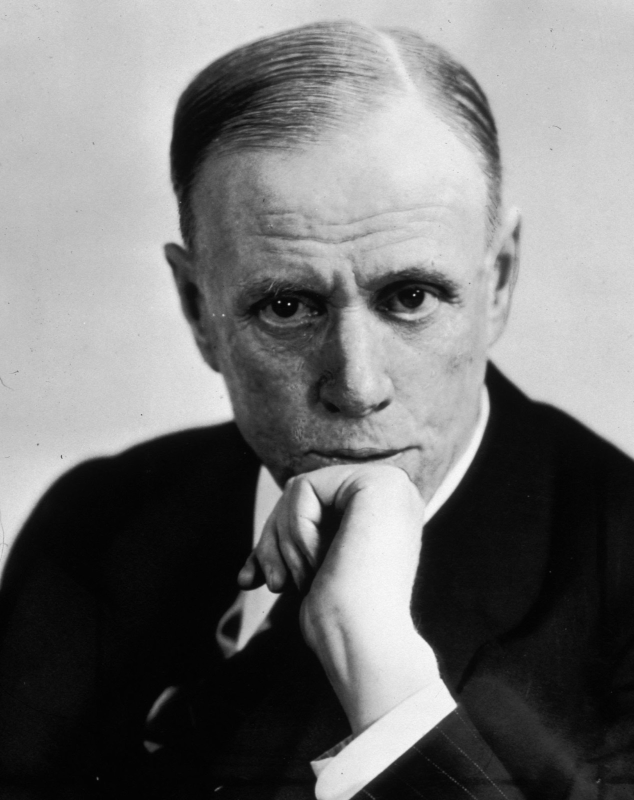
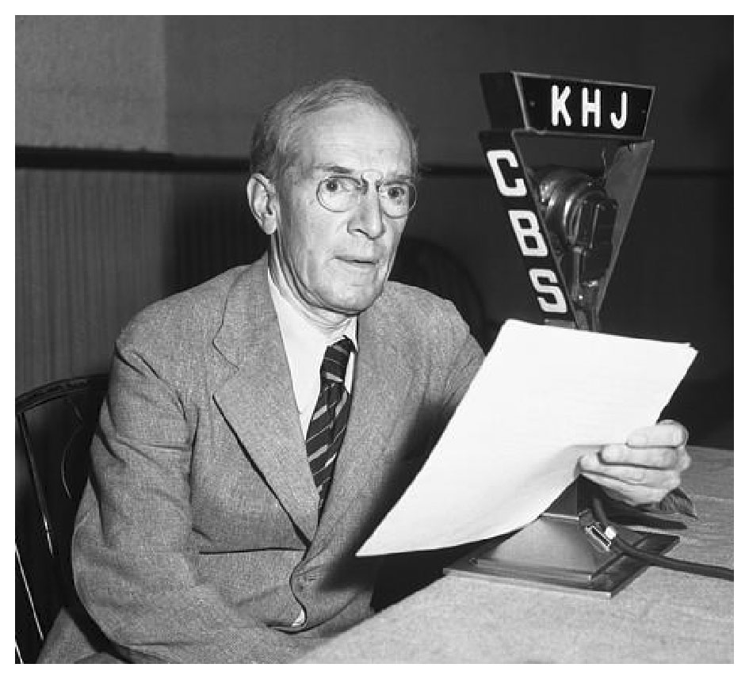
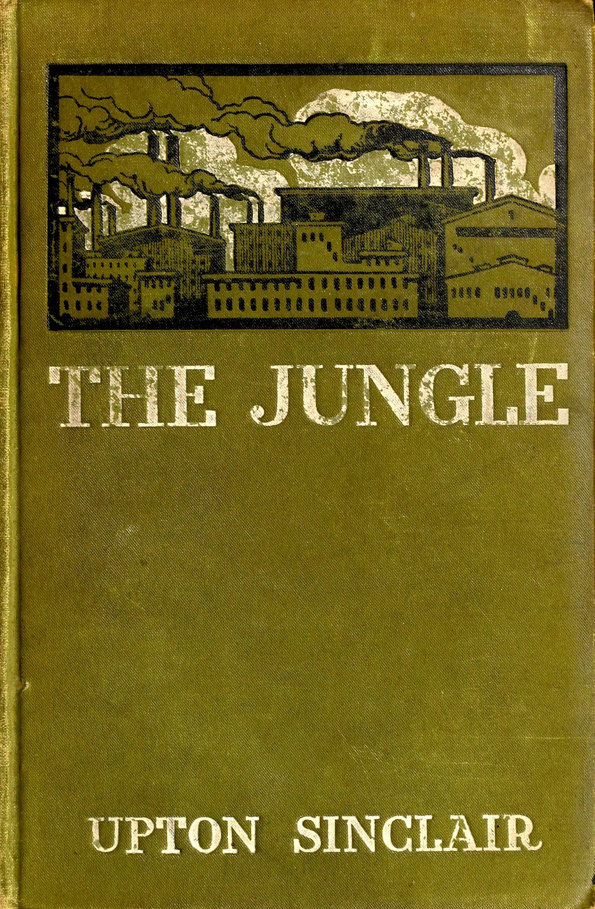
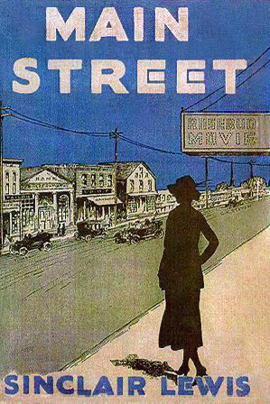

1. 文学的证词：在丛林与大街上追求平等
大家好，我是杨照，要来为大家介绍下一堂的公民课。我们一共有“公民十堂课”，其中的第四季要为大家介绍的是托克维尔的《论美国的民主》。
这部经典作品为什么重要？为什么我们要这样持续地关怀美国的政治制度？还有，在美国政治制度当中，托克维尔他特别提出了什么样的观点？这观点对于我们今天看待美国、了解美国，乃至于我们今天把美国置放在这样的一个世界史当中，和我们自己之间的关系，会发生什么样的作用？这是刚开头的时候，我试图要跟大家说明的。
真抱歉，我们是美国人
我们先把时间推回到一个世纪前。在上一个世纪，20世纪刚刚开始的时候，美国有两位最杰出的小说家，男的是亨利·詹姆斯（Henry James），另外有一位女作家是伊迪丝·华顿（Edith Wharton）。不过贯穿着这两位杰出小说家他们的精彩作品，却有一种共同的“抱歉、不好意思”的精神。甚至可以说，他们的小说之所以精彩，因为他们捕捉到了那个时代作为美国人的核心情绪，那就是：“真抱歉、真遗憾，我们是美国人，我们不是欧洲人。和欧洲社会相比，我们过得如此粗俗野蛮。”他们都在小说当中写出了对应于欧洲，美国自我认同上的复杂惭愧心情。
在那个时候，1900年代，如果有人告诉一般的美国人，包括Henry James跟Edith Wharton说，美国是世界的领导，他/她一定无法理解，更难以认同。美国人在那个时代普遍自觉他们是处于边缘地带，在欧洲文明的边陲，虽然拥有很大的土地，虽然累积了一点财富，虽然创造了一点成就，但也就仅止于此。
然而，一百年之后，到了2000年，美国就变了。讲到强国、讲到国际领导者，全世界绝大部分地区的人都会优先想到美国，美国人也就理所当然将自己视为是世界超强。甚至我们退回到2000年的时候，那时候美国是全球唯一的霸主。到2001年，发生了“9·11”事件；到2003年，美国出兵攻打伊拉克……这一连串的变化最清楚地显现了美国的地位还有美国的军事能力。
入侵伊拉克的时候，美国几乎没有得到任何其他国家的支持，唯一的盟友就只剩下英国一个国家。但美国不在乎，仍然发动了战争。伊拉克也不是一个军事的弱国，他们拥有庞大的军队，常年在武器发展和购买上投入了庞大的资源。但大家看一下当时的报道，伊拉克完全不是美国的对手。只花了一个多月的时间，损失了差不多一个连的兵力，美军就攻入了伊拉克的首都巴格达，就推翻了当时的萨达姆·侯赛因政权。美国不需要任何的帮手，也没有任何国家可以在军事上阻挡美国。
针对美国发动伊拉克战争，欧洲国家一面倒表示强烈反对，各国瞪大了眼睛，大声疾呼：“How dare you？”（你怎么敢做这样的事情啊？）但美国就是敢，美国不再在意欧洲的看法，也不在意欧洲的反对。
对照来看，我们也就明白，20世纪真的是一个“美国世纪”。20世纪全球历史最重要的现象，那就是美国的崛起。美国以戏剧性的速度爬上了国际霸主的地位，这不只是20世纪历史的主轴，也是理解21世纪的世界局势，一直到今天在我们周遭正在发生的事情，我们不能不探讨的背景。
政治是“美国故事”的核心
让我们再推前一个世纪，那是19世纪，另外有一个抢眼的国家崛起的现象——从普鲁士统一德国，到德国成为欧洲的强国。讨论19世纪的世界史，也就绝对不能漏掉德国的崛起，就像我们讨论20世纪的历史，美国崛起必然占据中央位置一样。
然而对照德国和美国的崛起，我们会发现还是有一些微妙而且关键的差异。普鲁士是一个不折不扣的军事强权，不过统一之后的德国，却不只是在政治、军事上的大国而已，德国同时是一个文化大国，在哲学、文学、音乐等方面都有足以傲视欧洲的成就。德国崛起了之后，没有人敢轻视德国的军事力量，也没有人能够轻蔑德国的文化力量。
相对地，一个世纪之后，当美国成为世界的军事超强，当美国自信满满地鼓吹它的“单边主义”霸权的时候，欧洲人的普遍态度却是：“你们又来了！你们又这样粗鲁、粗暴、自以为是了！”
也就说，一百年后，美国仍然无法取得文化上的地位。相较于欧洲文化，美国文化还是给人一种不够精致高妙的感觉。美国人整体的文化素养还是落后于欧洲的——欧洲人毫不羞愧地这样认为，美国大部分的人也都接受自己这样相对较为落后的地位。
德国的崛起与其文化有着密不可分的关系，拿走了文化上的贡献和成就，我们就无法准确地理解德国的崛起经过。美国的崛起却不是这样。美国的崛起靠的不是文化，靠的是什么呢？毋宁是政治，尤其是民主政治。因而要说美国崛起的故事，首先要讲的第一个题目，不会有其他的选择，一定是谈美国特殊的政治制度。美国对世界最大的贡献，那就是用了两百多年的时间贯彻、实验了一种奇特的政治制度；在美国之前，这种制度在现实上极为稀有、少有。经过美国持续不懈的实验，这套制度今天竟然在世界上被视为理所当然。
这是“美国故事”最重要的主题。我们可以不了解美国的文学、美术、音乐、建筑、电影，却不能不了解美国的政治制度；或者换一个方式说，恐怕得先了解了美国的政治制度，我们才有办法贴切地去欣赏、去评价美国的文学、美术、音乐、建筑、电影。
与众不同的“美国民主”
在美国，政治权力得到了完全不一样的新安排。草根、由下而上的同意是政治权力的基础，权力的分配、分散而非集中、集合，是它的基本架构。
民主不是一个新鲜的观念，早在两千多年前，古希腊就建立、运作过民主制度。然而放眼历史，一直到美国成型、兴起之前，人类从来没有将民主的原则、民主的方式运用在大规模的土地和人口上。
美国之前的民主，像是希腊城邦的民主，或者是瑞士的民主，都是在小国寡民的条件下实施的。那是直接民主，少数居民面对面直接沟通，每个人都有权利表达同意或者是反对，影响公共事务的决策。这种方式，当然没有办法推到较为大型、人口较多、土地分布较广的国家。
英国成功试验了国会代议制，每个区域选出代议士来争取该区域的利益。然而，在这种民主分权之上，毕竟还有国王的更高的权威，而且英国国王还同时身兼英国国教的领导者。比较小的权力由民主决定，比较大的、比较重要的权力，还是诉诸集中在国王一个人身上的制度。
出现在美国的政治权力安排方式，真的是空前的，所以今天说到美国的这些“Founding Fathers”，他们的建国先烈，美国人除了极少数的激烈左派之外，普遍还是表现出极高的尊崇。尽管美国是一个不相信权威的社会，美国历史上有过多少波推翻旧权威的大折腾，多少权威、多少伟人被翻案质疑，不过一直到今天，Founding Fathers还是站在那里。那就是因为，这些美国的Founding Fathers，当时他们所设计出来的政治制度，含藏了许多细腻的考量，经过了时间跟环境变动的考验，竟然都依然有效。时间越久远，环境变化越大，对于这些Founding Fathers的智慧也就更值得我们重视。
关于这部分，可以请大家参考“公民十堂课”前一季的节目，我们介绍的是《美国宪法：民主的观念与实践》。
两个“辛克莱”
让我们再讲回文学，讲到美国在文化上发展落后于欧洲的这个现象。
进入到了20世纪，大家可能不是那么清楚这个问题的答案是什么：美国第一位获颁诺贝尔文学奖的作家是谁呢？大家比较熟悉的可能是海明威，可能是福克纳。
不，第一位得到诺贝尔文学奖的作家是辛克莱·刘易斯（Sinclair Lewis），他是在1930年得到诺贝尔文学奖，那一年他才45岁。

辛克莱·刘易斯（Sinclair Lewis，1885-1951），美国作家，1930年获诺贝尔文学奖。图源网络。
今天几乎没有什么人知道Sinclair Lewis的名字了，更少人阅读他的著作，尤其是在美国以外的地区，Sinclair Lewis就是一个彻底被遗忘、被忽略的作家。事实上，就连Sinclair Lewis他在世的时候，他的作品都很少有美国以外的读者。
一般解释他之所以得到诺贝尔文学奖，基于两个理由。第一，因为他的小说这样“美国”。在那个美国快速强大兴起的时代，诺贝尔奖评委显然认定，应该要选出一位“美国代表作家”来反映这样的世界潮流。就像到了1968年，诺贝尔文学奖决定颁奖给日本作家，评委会就选了当时看来“最日本”的川端康成；1930年，他们则选上了“最美国”的Sinclair Lewis。
还有第二个理由，因为Lewis他的名字里有“Sinclair”。那个年代，其实有另外一位“Sinclair”在美国拥有更大的影响力，是美国人心目当中的头号小说家，那个人叫做厄普顿·辛克莱（Upton Sinclair）。Sinclair比Lewis更美国，但他的文学成就显然没有能够达到诺贝尔文学奖的高度，所以奖就从Upton Sinclair而换到了另外一位Sinclair的身上，这个人就是Sinclair Lewis。

厄普顿·辛克莱（Upton Sinclair，1878—1968），美国现实主义小说家。代表作《丛林》（The Jungle，又译《屠场》）。图源网络。
这第二个理由——“本来要给Upton Sinclair，后来给了Sinclair Lewis”，现在听起来好像是一个不怎么好笑的笑话，但是在1930年，美国人没有把它当笑话，就连两位当时的Sinclair都认真看待这项牵连。
Upton Sinclair，他比Sinclair Lewis早七年出生。Sinclair Lewis在耶鲁大学念书的时候，他曾经休学一年，到一个叫做Helicon Home Colony的地方去打工居住。这个Helicon Home Colony就是由Upton Sinclair所创立的，提供给厌倦于一般日子的作者、艺术家、音乐家、老师还有其他专业人士，可以到这里来过一种共同生产、共同消费的生活。
Upton Sinclair创立这个Helicon Home Colony，他的资金跟他的想法来自于他在1906年出版的小说，叫做《丛林》（The Jungle）。《丛林》这部小说写的不是大自然环境，而是都市里的“肉林”，因为它是以一家屠宰场作为情节背景，详实而且煽情地揭露了屠宰场里可怕的工作环境：工人如何受到无情的压榨对待，肉品如何草率、肮脏地处理。

厄普顿·辛克莱代表作《丛林》（The Jungle，又译《屠场》），1906年由Doubleday, Page & Co.出版。图源网络。
《丛林》这部小说出版之后，立刻就成了大畅销书。这本小说的头号读者，是当时的美国总统西奥多·罗斯福（Theodore Roosevelt）。老罗斯福亲自替这本书写了三页的书评，并且特别邀请Upton Sinclair到白宫做客。在书评当中，老罗斯福以沉痛的心情回忆自己曾经在“美西战争”——这是发生在1898年的战争，在战争当中，他亲眼目睹好不容易躲过战场炮火伤害的战友，却在吃下了后方送来的肉品之后中毒而死。你看，多么冤枉，又多么可恨！
《丛林》这部小说出版一个月之后，美国肉品市场明显萎缩；再过一个月，美国国会通过了《纯净食品与药物法案》，大幅提高了联邦政府对各种食品跟药物的检验权力，也就是今天“美国联邦食品药物管制局”（Food and Drug Administration，简称FDA）最初的法源。
很多人都同意，除了《黑奴吁天录》（Uncle Tom's Cabin，又常译作《汤姆叔叔的小屋》）之外，没有任何其他的小说曾经创造过高于《丛林》这部小说的社会冲击和效果。
Upton Sinclair他不只是一位小说家，或者说，他从来就不是为了写小说而写小说的作家。他是一个社会主义者，他是一个社会改革行动者，因而他就用《丛林》这部小说热销带来的丰厚版税，成立了一个社会主义实验基地。在那里，另外一位Sinclair——Sinclair Lewis，他得到了成长中关键的知识，还有意识启蒙。
小镇里的《大街》
美西战争爆发的那年，Sinclair Lewis13岁。他偷偷离家去征兵站，志愿要到战场上去当一个小鼓手。征兵站的人要他别胡思乱想，乖乖回家，好好上课。
Sinclair Lewis和父亲的关系很紧张，母亲又在他六岁的时候就去世了。虽然他和后母的关系还算不错，却无助于缓解他成长过程当中的种种痛苦。
Sinclair Lewis不擅长运动，长得又怪，高高瘦瘦的，四肢像是勉强嫁接在他的身体上，而且满脸都是青春痘。这样的人，很难在男生当中受欢迎，更不可能得到小女生的青睐。他成绩很好，能够写漂亮的英文，高中念的是中西部的贵族名校欧柏林预科（Oberlin Academy），大学念的更是东部贵族名校耶鲁大学。但学校越贵族，他就越是感觉到格格不入。
的确，Sinclair Lewis是从接触、阅读另外一个Sinclair——Upton Sinclair的著作，尤其是住进到这个Sinclair他所创建的实验社群当中，才找到了自己的人生方向。他不再写青春时候的浪漫诗篇，也不写明显是为了要畅销换钱的类型小说，转而尝试写社会小说。
1920年，Sinclair Lewis出版了小说《大街》（Main Street）。出版前，出版社就挺看好这本书的市场潜力，最乐观预期或许可以卖到两万五千本。没想到，半年时间，《大街》这部小说卖掉了十八万本；五年间，《大街》的销量甚至冲上了两百万本。这是美国出版界从来没有经验过的数字。

辛克莱·刘易斯代表作《大街》（Main Street），于1920年由Harcourt, Brace and Howe出版。图源网络。
《大街》（Main Street）这部小说，写的是美国中西部的故事。一位都会区长大的女孩嫁到了小镇上，被小镇的丑陋跟落后给吓到了。从原先的厌恶、想要逃走，女孩转变成为想要积极改变小镇的态度。她的努力当然就遭遇了强大的阻力，一度决定她要远走到华盛顿（Washington, D.C.）去。但最终她还是勇气十足、充满决心地回到小镇，继续她未完成的改革使命。
这就是让Sinclair Lewis得到诺贝尔文学奖的主要著作，一个极为纯粹的美国故事，背景设在最能够代表美国的小镇。“Main Street”的翻译叫做“大街”，但其实不是“大”街，是美国每一座小镇都一定会有的一条主要的街名。我们几乎找不到一个没有“Main Street”的美国小镇，“Main Street”就代表了美国小镇。
一百年后的“Main Street”
让我们从Main Street接下来，往后来看。将近一百年之后，“Main Street”一度又回到美国人的新闻标题和社会意识当中。
大家可能有人还有印象、还记得，曾经一时风起云涌，在美国有所谓“占领华尔街”的运动。他们所提出来的重要的口号，还记得吗？那就是“Main Street vs. Wall Street”，“大街”要对抗“华尔街”。因为“华尔街”属于少数的金融业，它的精神是投机的，是贪得无厌的，精神至上的。那么“Main Street”代表什么呢？这“大街”象征着所有和华尔街相反的价值。如果一定要选单一的“Main Street”的主轴的话，我们可以从众多的“Main Street vs. Wall Street”的讨论当中清楚地找出来。那是什么？那就是平等（Equality）。
图源网络
“大街”代表“小镇”，而“小镇”的核心精神就是“平等”。换句话说，在这些运动者的眼中，美国的基本价值，他们借以来反对“Wall Street”（华尔街）的，毕竟就是“平等”。
即使建立了一套全世界最发达的资本金融体系，即使往往被视为是全世界最资本主义也最商业化的社会，美国从来没有真正放弃过“平等”的价值信念。那是源自于刚刚讲到的Founding Fathers，在美国建国之初，他们这些人的历史经验，然后根植在美国的法律跟美国的政治体制当中的。美国社会容许多明显不平等的现象，却反对将不平等视为理所当然，更强烈反对毁弃平等的基本信念价值。
所以我们看，美国的文学史，从Henry James、Edith Wharton，接下来发展到了两位Sinclair，Upton Sinclair和Sinclair Lewis，他们写出了撼动美国社会的小说，一本《丛林》，一本《大街》，这两部小说宣扬的都是不平等所带来的黑暗情境。一百年之后，援引“Main Street”来对抗“Wall Street”，这样的运动，“占领华尔街”，本质上仍然就是以平等来对抗不平等。
正就是在这里，突显了托克维尔《论美国的民主》这部书的重要之处。因为托克维尔当时去观察，去分析美国的民主，他就点出了在美国的政治制度影响到美国的社会。平等的观念、平等的价值如此根深蒂固。
换句话说，一百多年的历史变化就证明了托克维尔当年有着准确的洞见——美国人创立了一个人类前所未见的平等社会。这是民主在美国，“美国的民主”最主要的效果，是“美国的民主”最宝贵的实验，更是“美国的民主”在普遍人类文明进步上最大的成就与贡献。
所以，从美国的历史，乃至从美国的现实，我们回头去看，我们回头去了解，当年托克维尔是如何得到了这样的结论。还有，托克维尔如此准确的洞见，又可以如何帮助我们不只是了解美国，而且同时了解，“平等”在政治制度、在社会组织上的重要性，以及它会遇到的种种阻碍跟困难。这就是我们这一季的节目，要为大家铺展开来说明跟解释的主要内容。
感谢您的收听，我们下次再会。